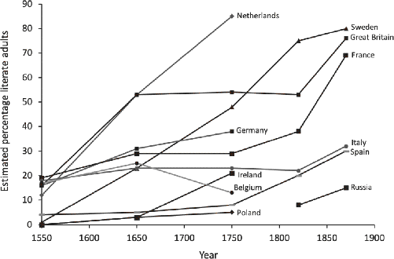
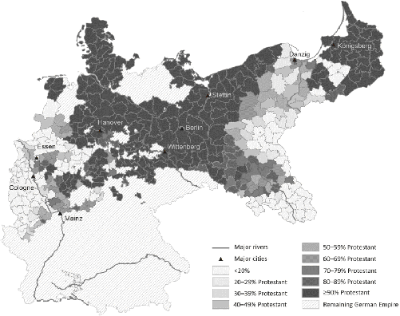

Your brain has been altered, neurologically rewired as it acquired a skill that your society greatly values. Until recently, this skill was of little or no use and most people in most societies never acquired it. In developing this ability, you have:1
What is this mental ability? What capacity could have renovated your brain, endowing you with new, specialized skills as well as inducing specific cognitive deficits?
The exotic mental ability is reading. You are likely highly literate.
Acquiring this mental ability involves wiring in specialized neurological circuitry in various parts of the brain. For processing letters and words, a Letterbox develops in the left ventral occipito-temporal region, which connects with nearby regions for object recognition, language, and speech. Brain injuries that damage the Letterbox cause illiteracy, though victims retain the ability to recognize numerals and make mathematical calculations, indicating that this region develops specifically for reading.3
The Letterbox’s circuitry is tuned to specific writing systems. For example, while Hebrew characters activate the Letterbox in Hebrew readers, English readers deal with these characters as they would any other visual object—and not like they do Roman letters. The Letterbox also encodes deeper, nonvisual patterns. For example, it registers the similarity between “READ” and “read” even though the two words look quite different.4
Let me show you something: there will be some large symbols at the top of the next page. Don’t read them, but instead only study their shapes. I’ll tell you when you should read them.
White Horse
白 馬
If you are literate in English, I bet you couldn’t help but read “White Horse” above. Your brain’s reading circuitry is superfast, automatic, and, as we just demonstrated, out of your conscious control. You can’t help reading what you see. By contrast, unless you are also literate in Chinese, you probably had no trouble simply admiring the interesting markings that form the Chinese characters above, which also mean “White Horse” (bai ma). In highly literate populations, psychologists like to flash words at experimental participants so quickly that they don’t consciously realize that they have just seen a word. Yet we know that they not only saw the flashed word but also read it, because its meaning subtly influences their brain activation and behavior. Such subliminal priming demonstrates both our inability to switch off our reading circuitry and the fact that we don’t even know it when we are in fact reading and processing what we read. Although this cognitive ability is culturally constructed, it’s also automatic, unconscious, and irrepressible. This makes it like many other aspects of culture.5
Learning to read forms specialized brain networks that influence our psychology across several different domains, including memory, visual processing, and facial recognition. Literacy changes people’s biology and psychology without altering the underlying genetic code. A society in which 95 percent of adults are highly literate would have, on average, thicker corpus callosa and worse facial recognition than a society in which only 5 percent of people are highly literate. These biological differences between populations will emerge even if the two groups were genetically indistinguishable. Literacy thus provides an example of how culture can change people biologically independent of any genetic differences. Culture can and does alter our brains, hormones, and anatomy, along with our perceptions, motivations, personalities, emotions, and many other aspects of our minds.6
The neurological and psychological modifications associated with literacy should be thought of as part of a cultural package that includes practices, beliefs, values, and institutions—like the value of “formal education” or institutions such as “schools”—as well as technologies like alphabets, syllabaries, and printing presses. Across societies, a combination of practices, norms, and technologies has jury-rigged aspects of our genetically evolved neurological systems to create new mental abilities. To understand the psychological and neurological diversity we find around the world, in domains ranging from verbal memory to corpus callosum thickness, we need to explore the origins and development of the relevant values, beliefs, institutions, and practices.
The case of literacy illustrates why so many psychologists and neuro-scientists have broadly misread their experimental results and repeatedly made incorrect inferences about human brains and psychology. By studying the students attending their home universities, neuroscientists found a robust right-hemisphere bias in facial processing. Following good scientific practice, different researchers replicated these results using different populations of Western university students. Based on these successful replications, it was inferred that this hemispheric bias in facial processing was a basic feature of human neurocognitive functioning—not a cultural by-product of deep literacy. Had they done what psychologists usually do to look for cultural differences—run experiments on East Asian students attending American universities—they would have further verified their prior results and confirmed a right-hemisphere bias. This is because all university students must be highly literate. Of course, there’s no shortage of illiterate people in the world today, with estimates placing the number somewhere north of 770 million, which is more than twice the population of the United States. They just don’t make it into university labs very often.
Here’s the thing: highly literate societies are relatively new, and quite distinct from most societies that have ever existed. This means that modern populations are neurologically and psychologically different from those found in societies throughout history and back into our evolutionary past. If you unwittingly study these peculiar modern populations without realizing the powerful impact that technologies, beliefs, and social norms related to literacy have on our brains and mental processes, you can get the wrong answers. This can happen even when you study seemingly basic features of psychology and neuroscience, like memory, visual processing, and facial recognition.
If we want to explain these aspects of brains and psychology as they appear in modern societies, we need to understand the origins and spread of high rates of literacy—when and why did most people start reading? Where and why did the beliefs, values, practices, technologies, and institutions emerge to create and support this new ability? This turns a question about neuroscience, and global psychological diversity, into one about cultural evolution and history.
Literacy does not come to pervade a society simply because a writing system emerges, though having such a system certainly helps. Writing systems have existed for millennia in powerful and successful societies, dating back some 5,000 years; yet until relatively recently, never more than about 10 percent of any society’s populations could read, and usually the rates were much lower.
Suddenly, in the 16th century, literacy began spreading epidemically across western Europe. By around 1750, having surged past more cosmopolitan places in Italy and France, the Netherlands, Britain, Sweden, and Germany developed the most literate societies in the world. Half or more of the populations in these countries could read, and publishers were rapidly cranking out books and pamphlets. In examining the spread of literacy between 1550 and 1900 in Figure P.1, remember that underneath this diffusion are psychological and neurological changes in people’s brains: verbal memories are expanding, face processing is shifting right, and corpus callosa are thickening—in the aggregate—over centuries.7
It’s not immediately obvious why this takeoff should have occurred at this point in history and in these places. The explosion of innovation and economic growth known as the Industrial Revolution wouldn’t hit England, and later the rest of Europe, until the late 18th century (at the earliest), so the initial spread of literacy isn’t a response to the incentives and opportunities created by industrialization. Similarly, it wasn’t until the late 17th century, with the Glorious Revolution in Britain, that constitutional forms of government began to emerge at the national level, so literacy isn’t purely a consequence of political representation or pluralism in state politics. In fact, in many places in Europe and America, high levels of literacy emerged and persisted long before the advent of mandatory state-funded schools. Of course, this doesn’t mean that literacy wasn’t eventually spurred along by wealth, democracy, and state funding. These developments, however, are too late to have sparked popular literacy. So, what did?

It began late in 1517, just after Halloween, in the small German charter town of Wittenberg. A monk and professor named Martin Luther had produced his famous Ninety-Five Theses, which called for a scholarly debate on the Catholic Church’s practice of selling indulgences. Catholics at the time could purchase a certificate, an “indulgence,” to reduce the time that their dead relatives had to spend in purgatory for their sins, or to lessen the severity of their own Penance.9 Luther’s Ninety-Five Theses marked the eruption of the Protestant Reformation. Elevated by his excommunication and bravery in the face of criminal charges, Luther’s subsequent writings on theology, social policy, and living a Christian life reverberated outward from his safe haven in Wittenberg in an expanding wave that influenced many populations, first in Europe and then around the world. Beyond the German lands, Protestantism would soon develop strong roots in the Netherlands and Britain, and later spread with the flows of British colonists into North America, New Zealand, and Australia. Today, variants of Protestantism continue to proliferate in South America, China, Oceania, and Africa.10
Embedded deep in Protestantism is the notion that individuals should develop a personal relationship with God and Jesus. To accomplish this, both men and women needed to read and interpret the sacred scriptures—the Bible—for themselves, and not rely primarily on the authority of supposed experts, priests, or institutional authorities like the Church. This principle, known as sola scriptura, meant that everyone needed to learn to read. And since everyone cannot become a fluent Latin scholar, the Bible had to be translated into the local languages.11
Luther not only created a German translation of the Bible, which rapidly came into broad use, but he began to preach about the importance of literacy and schooling. The task ahead for him was big, since estimates suggest that only about 1 percent of the German-speaking population was then literate. Beginning in his own principality, Saxony, Luther pushed rulers to take responsibility for literacy and schooling. In 1524, he penned a pamphlet called “To the Councilmen of All Cities in Germany That They Establish and Maintain Christian Schools.” In this and other writings, he urged both parents and leaders to create schools to teach children to read the scriptures. As various dukes and princes in the Holy Roman Empire began to adopt Protestantism, they often used Saxony as their model. Consequently, literacy and schools often diffused in concert with Protestantism. Literacy also began spreading in other places, like Britain and the Netherlands, though it was in Germany that formal schooling first became a sacred responsibility of secular rulers and governments.12
The historical connection between Protestantism and literacy is well documented. Illustrating this, Figure P.1 shows that literacy rates grew the fastest in countries where Protestantism was most deeply established. Even as late as 1900, the higher the percentage of Protestants in a country, the higher the rate of literacy. In Britain, Sweden, and the Netherlands, adult literacy rates were nearly 100 percent. Meanwhile, in Catholic countries like Spain and Italy, the rates had only risen to about 50 percent. Overall, if we know the percentage of Protestants in a country, we can account for about half of the cross-national variation in literacy at the dawn of the 20th century.13
The problem with these correlations and many similar analyses that link Protestantism to either literacy or formal schooling is that we can’t tell if Protestantism caused greater literacy and education or whether literacy and education caused people to adopt Protestantism. Or maybe both Protestantism and literacy tended to emerge in the wake of economic growth, representative governments, and technological developments like the printing press. Fortunately, history has provided a kind of natural experiment in Prussia, which has been explored by the economists Sascha Becker and Ludger Woessmann.
Prussia provides an excellent case study for a couple of reasons. First, it developed incipient notions of religious freedom early on. By 1740, Prussia’s King Frederick (the Great) declared that every individual should find salvation in his own way—effectively declaring religious freedom. This meant that Prussians could pick their religion unconstrained by the top-down dictates of political leaders. Second, Prussia had relatively uniform laws and similar governing institutions across regions. This mitigates concerns that any relationship observed between literacy and Protestantism might be due to some unseen linkage between religion and government.
Analyses of the 1871 Prussian census show that counties with more Protestants had higher rates of literacy and more schools, with shorter travel times to local schools. This pattern prevails, and the evidence is often stronger, when the effects of urbanization and demographics are held constant. The connection between Protestantism and schools is even evident in 1816, prior to German industrialization. Thus, the relationship between religion and schooling/literacy isn’t due to industrialization and the associated economic growth.14
Still, the relationship between Protestantism and literacy/schooling is just an association.15 Many of us learned that causal links can never be inferred from mere correlations, and that only experiments can identify causation. This isn’t entirely true anymore, however, because researchers have devised clever ways to extract quasi-experimental data from the real world. In Prussia, Protestantism spread from Wittenberg like the ripples created by tossing a stone in a pond (to use Luther’s own metaphor). Because of this, the further a Prussian county was from Wittenberg in 1871, the smaller the percentage of Protestants. For every 100 km (62 mi) traveled from Wittenberg, the percentage of Protestants dropped by 10 percent (Figure P.2). The relationship holds even when we statistically remove the influence of all kinds of economic, demographic, and geographic factors. Thus we can take proximity to ground zero of the Reformation—Wittenberg—as a cause of Protestantism in Prussia. Obviously, lots of other factors matter, including urbanization, but being near Wittenberg—the new center of action after 1517—had its own independent effect on Protestantism within the Prussian context.
The radial patterning of Protestantism allows us to use a county’s proximity to Wittenberg to isolate—in a statistical sense—that part of the variation in Protestantism that we know is due to a county’s proximity to Wittenberg and not to greater literacy or other factors. In a sense, we can think of this as an experiment in which different counties were experimentally assigned different dosages of Protestantism to test for its effects. Distance from Wittenberg allows us to figure out how big that experimental dosage was. Then, we can see if this “assigned” dosage of Protestantism is still associated with greater literacy and more schools. If it is, we can infer from this natural experiment that Protestantism did indeed cause greater literacy.16
The results of this statistical razzle-dazzle are striking. Not only do Prussian counties closer to Wittenberg have higher shares of Protestants, but those additional Protestants are associated with greater literacy and more schools. This indicates that the wave of Protestantism created by the Reformation raised literacy and schooling rates in its wake. Despite Prussia’s having a high average literacy rate in 1871, counties made up entirely of Protestants had literacy rates nearly 20 percentile points higher than those that were all Catholic.18

These same patterns can be spotted elsewhere in 19th-century Europe—and today—in missionized regions around the globe. In 19th-century Switzerland, other aftershocks of the Reformation have been detected in a battery of cognitive tests given to Swiss army recruits. Young men from all-Protestant districts were not only 11 percentile points more likely to be “high performers” on reading tests compared to those from all-Catholic districts, but this advantage bled over into their scores in math, history, and writing. These relationships hold even when a district’s population density, fertility, and economic complexity are kept constant. As in Prussia, the closer a community was to one of the two epicenters of the Swiss Reformation—Zurich or Geneva—the more Protestants it had in the 19th century. Notably, proximity to other Swiss cities, such as Bern and Basel, doesn’t reveal this relationship. As is the case in Prussia, this setup allows us to finger Protestantism as driving the spread of greater literacy as well as the smaller improvements in writing and math abilities.19
While religious convictions appear central to the early spread of literacy and schooling, material self-interest and economic opportunities do not. Luther and other Reformation leaders were not especially interested in literacy and schooling for their own sake, or for the eventual economic and political benefits these would foster centuries later. Sola scriptura was primarily justified because it paved the road to eternal salvation. What could be more important? Similarly, the farming families who dominated the population were not investing in this skill to improve their economic prospects or job opportunities. Instead, Protestants believed that people had to become literate so that they could read the Bible for themselves, improve their moral character, and build a stronger relationship with God. Centuries later, as the Industrial Revolution rumbled into Germany and surrounding regions, the reservoir of literate farmers and local schools created by Protestantism furnished an educated and ready workforce that propelled rapid economic development and helped fuel the second Industrial Revolution.20
The Protestant commitment to broad literacy and education can still be observed today in the differential impacts of Protestant vs. Catholic missions around the globe. In Africa, regions that contained more Christian missions in 1900 had higher literacy rates a century later. However, early Protestant missions beat out their Catholic competitors. Comparing them head-to-head, regions with early Protestant missions are associated with literacy rates that are about 16 percentile points higher on average than those associated with Catholic missions. Similarly, individuals in communities associated with historical Protestant missions have about 1.6 years more formal schooling than those around Catholic missions. These differences are big, since Africans in the late 20th century had only about three years of schooling on average, and only about half of adults were literate. These effects are independent of a wide range of geographic, economic, and political factors, as well as the countries’ current spending on education, which itself explains little of the variation in schooling or literacy.21
Competition among religious missions makes a big difference. Both Catholic and Protestant missionaries were more effective at instilling literacy when they were directly competing for the same souls. In fact, in the absence of competition from the literacy-obsessed Protestants, it’s not entirely clear that Catholic missionaries had much effect on literacy at all. Furthermore, detailed analyses of the African data reveal that Protestant missions not only built formal schools but also inculcated cultural values about the importance of education. This is consistent with 16th- and 17th-century Europe, where the Catholic interest in literacy and schooling was fueled in part by the Protestants’ intense focus on it.22
Besides shaping the Catholic Church through competition, Luther’s Protestantism also inadvertently laid the foundation for universal, state-funded schooling by promoting the idea that it was the government’s responsibility to educate the populace. From the beginning, Luther’s writings not only emphasized the need for parents to ensure their children’s literacy but also placed the obligation for creating schools on local princes and dukes. This religiously inspired drive for public schools helped make Prussia a model for state-funded education that was later copied by countries like Britain and the United States.
Notably, sola scriptura specifically drove the spread of female literacy, first in Europe and later across the globe. In 16th-century Brandenburg, for example, while the number of boys’ schools almost doubled, from 55 to 100, the number of girls’ schools increased over 10 times, from 4 to 45. Later, in 1816, the higher the percentage of Protestants in a county or town, the larger the percentage of girls who were enrolled in schools relative to boys. In fact, when a county’s distance to Wittenberg is used to extract only that quasi-experimental fraction of the variation in religious affiliation (Catholic or Protestant) that was caused by the early ripples of the Reformation, the relationship still holds—indicating that Protestantism likely caused a rise in female literacy. Outside of Europe, the impact of Protestantism on educating girls continues to play out as Christianity spreads globally. In both Africa and India, for example, early Protestant missions had notably larger effects on the literacy and schooling of girls compared to their Catholic competitors. The impact of Protestantism on women’s literacy is particularly important, because the babies of literate mothers tend to be fewer, healthier, smarter, and richer as adults than those of illiterate mothers.23
When the Reformation reached Scotland in 1560, it was founded on the central principle of a free public education for the poor. The world’s first local school tax was established there in 1633 and strengthened in 1646. This early experiment in universal education soon produced a stunning array of intellectual luminaries, from David Hume to Adam Smith, and probably midwifed the Scottish Enlightenment. The intellectual dominance of this tiny region in the 18th century inspired Voltaire to write, “We look to Scotland for all our ideas of civilization.”24
Let’s follow the causal chain I’ve been linking together: the spread of a religious belief that every individual should read the Bible for themselves led to the diffusion of widespread literacy among both men and women, first in Europe and later across the globe. Broad-based literacy changed people’s brains and altered their cognitive abilities in domains related to memory, visual processing, facial recognition, numerical exactness, and problem-solving. It probably also indirectly altered family sizes, child health, and cognitive development, as mothers became increasingly literate and formally educated. These psychological and social changes may have fostered speedier innovation, new institutions, and—in the long run—greater economic prosperity.25
Of course, just as the great German sociologist Max Weber theorized, there’s much more to the story of Protestantism than literacy. As we’ll see in Chapter 12, Protestantism also likely influenced people’s self-discipline, patience, sociality, and suicidal inclinations.26
This book is not primarily about Protestantism or literacy, though I will endeavor to explain why European populations at the close of the Middle Ages were so susceptible to the unusually individualistic character of Protestant beliefs. The very notion that every individual should read and interpret ancient sacred texts for himself or—worse—herself, instead of simply deferring to the great sages, would have seemed somewhere between outrageous and dangerous in most premodern societies.27 Protestantism, which was actively opposed by many religious and secular elites, would have gone nowhere in most places and during most epochs. To explain the unusual nature of Western Christianity, as well as our families, marriages, laws, and governments, we’ll be going much deeper into the past to explore how a peculiar set of religious prohibitions and prescriptions reorganized European kinship in ways that altered people’s social lives and psychology, ultimately propelling the societies of Christendom down a historical pathway not available elsewhere. You’ll see that Protestantism and its important influences are much closer to the end of the story than to the beginning.
Nevertheless, the case of literacy and Protestantism illustrates, in microcosm, four key ideas that will run through the rest of this book. Let’s go through them:
As you’ll see, literacy is no special case. Rather, it’s the tip of a large psychological and neurological iceberg that many researchers have missed. In the next chapter, I’ll begin by probing the depths and shape of this iceberg. Then, after laying a foundation for thinking about human nature, cultural change, and societal evolution, we’ll examine how and why a broad array of psychological differences emerged in western Europe, and what their implications are for understanding modern economic prosperity, innovation, law, democracy, and science.